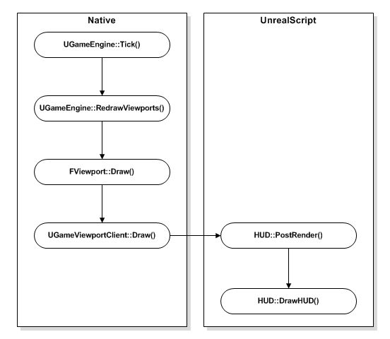
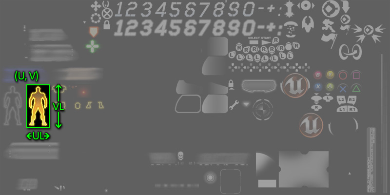

UDN
Search public documentation:
HUDTechnicalGuide
日本語訳
中国翻译
한국어
Interested in the Unreal Engine?
Visit the Unreal Technology site.
Looking for jobs and company info?
Check out the Epic games site.
Questions about support via UDN?
Contact the UDN Staff
中国翻译
한국어
Interested in the Unreal Engine?
Visit the Unreal Technology site.
Looking for jobs and company info?
Check out the Epic games site.
Questions about support via UDN?
Contact the UDN Staff
UE3 Home > User Interfaces & HUDs > HUD Technical Guide
HUD Technical Guide
Overview
HUD Types
- Canvas - Utilizes the Canvas class to draw HUD graphics.
- Scaleform GFx - Utilizes the Scaleform GFx integration to display HUD graphics and menus.
Canvas HUD
The Canvas class provides all the tools necessary to draw graphics and text to the screen. It has been used in countless games created using Unreal Engine and is a viable solution for most any game. This method does not provide out of the box input handling or animation, which does not make it well-suited for creating menus or complex user interfaces. For more information on using the Canvas class to create a HUD, please see the Canvas Technical Guide.Scaleform GFx HUD
The Scaleform GFx integration in Unreal Engine 3 is equally suited to the creation of in-game HUDs as well as menus and user interfaces. It does come with the overhead of setting up scenes in Flash, but this also provides designers the ability to be the ones setting up the interface instead of relying on a programmer to lay things out solely in code. For more information on using Scaleform GFx to create a HUD, please see the Scaleform Technical Guide.HUD Class
PostRender() event executed which kicks off the process of redrawing the contents of the HUD to the screen. The PostRender() event in turn calls the DrawHUD() function which is the main drawing function. The sequence of drawing events for each update is shown below:

The DrawHUD() function may then make calls to other more specialized drawing functions to draw individual elements of the HUD to the screen. For example, there may be a DrawMinimap() function responsible for drawing only the map of the world and any other players or points of interest.
HUD Properties
Debug- bShowDebugInfo - If TRUE, debug properties of the current ViewTarget will be displayed on the screen.
- DebugDisplay - An array of strings specifying what debug info to display for the current ViewTarget actor when
bShowDebugInfois TRUE. The base engine types include "AI", "physics", "weapon", "net", "camera", and "collision".
- Canvas - The Canvas object to Draw the HUD on. Note: A new Canvas is given every frame, only draw on it from the HUD::PostRender() event. See the Canvas Technical Guide for more information on using the Canvas class.
- PlayerOwner - References the PlayerController which owns the HUD, e.g. the local PlayerController.
- PostRenderedActors - An array of Actors which need their
NativePostRenderFor()andPostRenderFor()functions called to draw HUD overlays. - WhiteColor/GreenColor/RedColor - Preset white, green, and red color variables.
- bShowHUD - If TRUE, the HUD will be visible.
- bShowScores - If TRUE, the scoreboard will be visible.
- bShowBadConnectionAlert - If TRUE, an indication of a bad connection is displayed on the HUD. This is set in native code based on lag and packet loss.
- RenderDelta - The amount of time in seconds since the last update.
- LastHUDRenderTime - Holds the time of the last render to use when calculating the
RenderDelta.
- ConsoleMessages - An array of messages to display.
- ConsoleColor - The color to use when displaying console messages.
- ConsoleMessageCount - The maximum number of console messages to keep in the ConsoleMessages array.
- ConsoleFontSize -
- MessageFontOffset - An offset applied to the FontSize of LocalMessages when determining which font to use.
- MaxHUDAreaMessageCount - The maximum amount of LocalMessages to display.
- LocalMessages - An array of LocalMessages to display.
- ConsoleMessagePos[X/Y] - Horizontal and vertical position on the screen to draw console messages.
- KismetTextInfo - An array of Kismet DrawText messages to display.
- bMessageBeep - If TRUE, any new console messages displayed will make a beep.
- HUDCanvasScale - The amount of screen-space to use (for TV's) in the range [0,1].
- Size[X/Y] - The size in pixels of the viewport horizontally and vertically..
- Center[X/Y] - The center of the viewport horizontally and vertically.
- Ratio[X/Y] - The ratio of the current viewport horizontally and vertically size to the native resolution of 1024x768.
HUD Functions
Debug- ShowDebug [DebugType] - Toggles displaying properties of player's current ViewTarget.
- DebugType - The properties to show or hide. Values supported by base engine include "AI", "physics", "weapon", "net", "camera", and "collision".
- ShowDisplayDebug [DebugType] - Determines whether the specified debug information is currently set to be displayed, e.g. it is in the
DebugDisplayarray.- DebugType - The properties to check. Values supported by base engine include "AI", "physics", "weapon", "net", "camera", and "collision".
- ShowDebugInfo [out_YL] [out_YPos] - Entry point for basic debug rendering on the HUD. Activated and controlled via the "showdebug" console command. Can be overridden to display custom debug per-game.
- out_YL - The height of the current font.
- out_YPos - The vertical position on the Canvas.
out_YPos +out_YL= gives the position to draw text for the next debug line.
- DrawRoute [Target] - Draws debug information for ViewTargets which are bots regarding their current route.
- Target - References the Pawn (bot) for which to draw the route information.
- ToggleHUD - Exec function that toggles the visibility of the HUD, via the
bShowHUDvariable. - ShowHUD - Exec function that toggles the visibility of the HUD by calling the
ToggleHUD()function. - ShowScores - Exec function that toggles display of the in-game scoreboard by calling the
SetShowScores()function. - SetShowScores [bNewValue] - Exec function that sets the visibility of the in-game scoreboard, via the
bShowScoresvariable.- bNewValue - The new value for the
bShowScoresvariable.
- bNewValue - The new value for the
- DisplayBadConnectionAlert - Function stub for drawing the bad connection warning message. Subclasses should override this.
- PreCalcValues - Calculates and populates the Size[X/Y], Center[X/Y], and Ratio[X/Y] values.
- PostRender - Main drawing function for the HUD. Called each frame by the engine.
- DrawHUD - Main game HUD drawing function. Gets called before any messaging. Subclasses should override this to handle game-specific HUD drawing.
- Draw2DLine [X1] [Y1] [X2] [Y2] [LineColor] - Draws a line in 2D space to the screen.
- [X/Y]1 - The horizontal and vertical position in pixels for the starting point of the line.
- [X/Y]2 - The horizontal and vertical position in pixels for the end point of the line.
- LineColor - The color to use when drawing the line.
- Draw3DLine [Start] [End] [LineColor] - Draws a line in 3D space to the screen.
- Start - A Vector specifying the starting point of the line in world space.
- End - A Vector specifying the end point of the line in world space.
- LineColor - The color to use when drawing the line.
- DrawText [Text] [Position] [TextFont] [FontScale] [TextColor] - Draws a string of text to the screen.
- Text - The string to draw to the screen.
- Position - A Vector2D specifying the horizontal and vertical (X and Y) position in pixels at which to draw the text on the screen.
- TextFont - The Font to use to draw the text.
- FontScale - A Vector2D specifying the horizontal and vertical (X and Y) scale of the text.
- TextColor - The color to use to draw the text to the screen.
- DrawActorOverlays [Viewpoint] [ViewRotation] - Native. Draws overlays for actors that were rendered this tick and have added themselves to the PostRenderedActors array
- Viewpoint - The current location of the player's camera.
- ViewRotation - The current rotation of the player's camera.
- AddPostRenderedActor [A] - Adds an Actor to the list of
PostRenderedActors.- A - References the Actor to add to the array.
- RemovePostRenderedActor [A] - Removes an Actor from the list of
PostRenderedActors.- A - References the Actor to remove from the array.
- GetFontSizeIndex [FontSize] - Returns a Font corresponding to the given font size.
- FontSize - The size for which to get the font.
- PlayerOwnerDied - Function stub called when the
PlayerOwnerof the HUD dies. Subclasses should override this function. - OnLostFocusPause [bEnable] - Pauses or unpauses the game due to main window's focus being lost.
- bEnable - If TRUE, enable the pause state. Otherwise, the pause state is disabled.
- ClearMessage [M] - Clears the given LocalMessage.
- M - References the HUDLocalizedMessage to clear.
- Message [PRI] [Msg] [MsgType] [LifeTime] - Wrapper function to add a new console message. Calls
AddConsoleMessage().- PRI - References the PlayerReplicationInfo of the player sending the message.
- Msg - The text of the message.
- MsgType - The type of message, i.e. 'Say', 'TeamSay', etc.
- LifeTime - Optional. The amount of time in seconds for which to display the message.
- AddConsoleMessage [M] [InMessageClass] [PRI] [LifeTime] - Adds a new ConsoleMessage to be displayed.
- M - The text of the message.
- InMessageClass - The class (LocalMessage or subclass) of the new message.
- PRI - References the PlayerReplicationInfo of the player associated with the message.
- LifeTime - Optional. The amount of time in seconds for which to display the message.
- DisplayConsoleMessages - Draws the pending ConsoleMessages to the screen.
- LocalizedMessage [InMessageClass] [RelatedPRI_1] [RelatedPRI_2] [CriticalString] [Switch] [Position] [LifeTime] [FontSize] [DrawColor] [OptionalObject] - Wrapper function for adding a new LocalMessage to be displayed. Calls
AddLocalizedMessage(). Also adds message as a console message if thebIsSpecialproperty of the message class is FALSE.- InMessageClass - The class (LocalMessage or subclass) of the new message.
- RelatedPRI_1 - References the first PlayerReplicationInfo of a player associated the message. The class of the message defines how the PRI's are used.
- RelatedPRI_2 - References the second PlayerReplicationInfo of a player associated the message. The class of the message defines how the PRI's are used.
- CriticalString - The text of the message.
- Switch - The message switch. The class of the message determines how the switch is used.
- Position - The vertical position on the screen of the message.
- LifeTime - The amount of time in seconds for which to display the message.
- FontSize - The size of the font to use for displaying the message. Offset by
MessageFontOffsetand passed toGetFontSizeIndex()to get the Font to use to display the message. - DrawColor - The color to use when displaying the message.
- OptionalObject - Optional. A reference to an object associated with the message. The class of the message defines how the object are used.
- AddLocalizedMessage [Index] [InMessageClass] [CriticalString] [Switch] [Position] [LifeTime] [FontSize] [DrawColor] [MessageCount] [OptionalObject] - Adds an actual message to the
LocalMessagesarray.- Index - The index in to the
LocalMessagesarray to place the new message. - InMessageClass - The class (LocalMessage or subclass) of the new message.
- CriticalString - The text of the message.
- Switch - The message switch. The class of the message determines how the switch is used.
- Position - The vertical position on the screen of the message.
- LifeTime - The amount of time in seconds for which to display the message.
- FontSize - The size of the font to use for displaying the message. Offset by
MessageFontOffsetand passed toGetFontSizeIndex()to get the Font to use to display the message. - DrawColor - The color to use when displaying the message.
- MessageCount - Optional. The number of messages currently in the
LocalMessagesarray. - OptionalObject - Optional. A reference to an object associated with the message. The class of the message defines how the object is used.
- Index - The index in to the
- GetScreenCoords [PosY] [ScreenX] [ScreenY] [InMessage] - Calculates the position on the screen to draw a LocalMessage.
- PosY - Vertical position of the message.
- ScreenX - Out. Outputs the horizontal position in pixels.
- ScreenY - Out. Outputs the vertical position in pixels.
- InMessage - Out. The message to get the screen position for.
- DrawMessage [i] [PosY] [DX] [DY] - Performs the set up for displaying a LocalMessage and calls
DrawMessageText()to display the message.- i - The index in to the
LocalMessagesarray of the message to display. - PosY - The vertical position on the screen of the message.
- DX - Out. Outputs the width of the message's text.
- DY - Out. Outputs the height of the message's text.
- i - The index in to the
- DrawMessageText [LocalMessage] [ScreenX] [ScreenY] - Draws the text of a LocalMessage to the screen.
- LocalMessage - The LocalMessage for which to display the text.
- ScreenX - The horizontal position in pixels on the screen to draw the message text.
- ScreenY - The vertical position in pixels on the screen to draw the message text.
- DisplayLocalMessages - Performs layout of and then displays the LocalMessages.
- DisplayKismetMessages - Displays all pending Kismet DrawText messages.
MobileHUD
MobileHUD Properties
Controls- JoystickBackground - The texture containing the graphic for the background of the joystick elements.
- JoystickBackgroundUVs - The TextureUVs specifying the coordinates of the graphic in the
JoystickBackgroundtexture. - JoystickHat - The texture containing the graphic for the actual joystick elements.
- JoystickHatUVs - The TextureUVs specifying the coordinates of the graphic in the
JoystickHattexture. - ButtonImages - An array of textures containing the graphics for the on-screen buttons.
- ButtonUVs - An array of TextureUVs specifying the coordinates of the graphics in the
ButtonImagestextures. - ButtonFont - The Font used to draw the labels of the on-screen buttons.
- ButtonCaptionColor - The color to use when drawing the labels of the on-screen buttons.
- TrackballBackground - The texture containing the graphic for the background of the trackball elements.
- TrackballBackgroundUVs - The TextureUVs specifying the coordinates of the graphic in the
TrackballBackgroundtexture. - TrackballTouchIndicator - The texture containing the graphic for the background of the trackball touch indicator.
- TrackballTouchIndicatorUVs - The TextureUVs specifying the coordinates of the graphic in the
TrackballTouchIndicatortexture. - SliderImages - An array of textures containing the graphics for the on-screen sliders.
- SliderUVs - An array of TextureUVs specifying the coordinates of the graphics in the
SliderImagestextures.
- bDebugTouches - If TRUE, display debug information regarding the touches.
- bDebugZones - If TRUE, debug info about the various mobile input zones will be displayed.
- bDebugZonePresses - If TRUE, debug info about a mobile input zone will be displayed, but only on presses.
- bShowGameHUD - If TRUE, the standard game HUD will be displayed. This is needed to support hiding the hud completly yet still supporting the ShowHUD command.
- bShowMobileHUD - If TRUE, the mobile HUD (i.e.: Input zones. etc) will be displayed.
- bForceMobileHUD - If TRUE, the Mobile HUD will be displayed even on non-mobile platforms.
- bShowMobileTilt - If TRUE, the device tilt will be displayed.
- MobileTilt[X/Y] - The horizontal and vertical position at which to display the device tilt.
- MobileTiltSize - The size at which to display the device tilt.
MobileHUD Functions
Drawing- ShowMobileHUD - Returns whether or not the mobile HUD should be displayed.
- RenderMobileMenu - Mobile HUD menu drawing function. Called by
PostRender()after the mobile HUD drawing is complete.
- DrawInputZoneOverlays - Main mobile HUD drawing function which draws the input zones on top of everything else. Called by
PostRender()after the main HUD drawing is complete. - DrawMobileZone_Button [Zone] - Draws a button for the given input zone.
- Zone - The MobileInputZone for which to draw the button.
- DrawMobileZone_Joystick [Zone] - Draws a joystick for the given input zone.
- Zone - The MobileInputZone for which to draw the joystick.
- DrawMobileZone_Trackball [Zone] - Draws a trackball for the given input zone.
- Zone - The MobileInputZone for which to draw the trackball.
- DrawMobileZone_Slider [Zone] - Draws a slider for the given input zone.
- Zone - The MobileInputZone for which to draw the slider.
- DrawMobileTilt [MobileInput] - Draws the device tilt using the tilt information of the given MobilePlayerInput.
- MobileInput - The MobilePlayerInput providing the tilt information to be displayed.
UDKHUD
UDKHUD Properties
- GlowFonts - The Fonts to use for drawing pulsing text with a glow or bloom effect. The [0] element in the array holds the font to use for the glow. The [1] element holds the font to draw the regular text.
- PulseDuration - The amount of time the text pulse should take.
- PulseSplit - The time when the pulse should switch from out to in.
- PulseMultiplier - How much the text should pulse - NOTE this will be added to 1.0 (so
PulseMultipler0.5 = 1.5) - TextRenderInfo - A FontRenderInfo struct holding the information used in font rendering. This should be set up in the default properties of the HUD subclass and passed to any
Canvas.DrawText()that need it. - ConsoleIconFont - The Font to use for a given console.
- BindTextFont - The Font used to display input binds when they aren't represented by an icon in ConsoleIconFont.
UDKHUD Functions
- DrawGlowText [Text] [X] [Y] [MaxHeightInPixels] [PulseTime] [bRightJustified] - Draws pulsing text with a glow or bloom effect.
- Text - The string of text to display.
- [X/Y] - The horizontal and vertical position on the screen to draw the text.
- MaxHeightInPixels - Optional. The maximum height the text should be.
- PulseTime - Optional. The amount of time one pulse should take.
- bRightJustified - Optional. If TRUE, the text should be aligned to the right edge of the current clipping region of the Canvas.
- TranslateBindToFont [InBindStr] [DrawFont] [OutBindStr] - Convert a string with potential escape sequenced data in it to a font and the string that should be displayed.
- InBindStr - The string containing the escape data.
- DrawFont - Out. Outputs the Font to use to draw the string; either the ConsoleIconFont or the BindTextFont.
- OutBindStr - Out. Outputs the string with the escape data stripped.
- DisplayHit [HitDir] [Damage] [damageType] - Displays a hit effect showing the direction from which the damage came.
- HitDir - The Vector specifying where the damage came from.
- Damage - The amount of damage done.
- damageType - The DamageType of the damage.
Texture Atlas Icon Coordinates
U and V) at which to begin sampling the texture and a width and height to sample (usually denoted by UL and VL). These coordinates are usually stored within a struct, i.e. MobileHUD.TextureUVs or UIRoot.TextureCoordinates.
